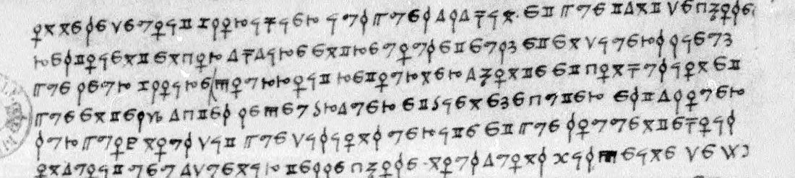
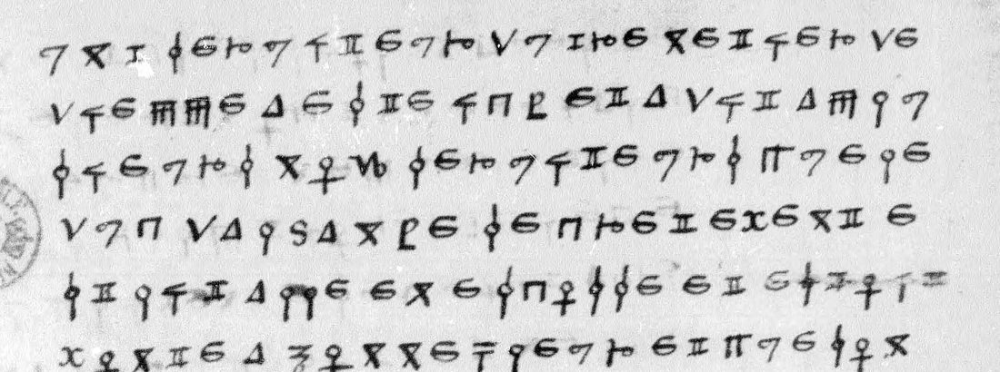
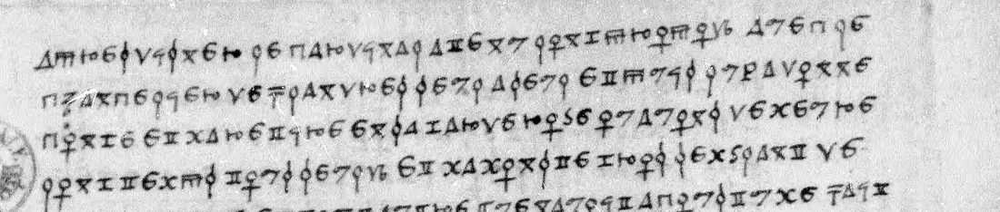

01 The documents and the key
Français 3092 is a volume of letters and news gathered by Florimond Robertet’s office in 1520–21: despatches from Carpi and Villandry in Rome, news of Pamplona and of Nassau’s army, Mouzon in August 1521, Langeac’s instructions for the Swiss (Troyes, 6 September 1521), and a letter of Villandry “de Callais, ce VIIIe jour de novembre”. Among them the BnF inventory lists three “Mémoires chiffrés”: no. 43 (f. 101r, 26 lines), no. 44 (ff. 103r–104r, 65 lines) and no. 46 (f. 107r–v, 40 lines). They are unsigned and undated, and none carries a decipherment.

The key is Lasry’s table of 5 November 2023 for the fr. 3029 cipher (cryptiana, George Lasry’s decipherments), already used here to read fr. 3029 f. 134. It is a plain substitution: one invented sign for each letter, with a second form for O, U and V sharing a sign, and I and J sharing another. Six more signs are nulls, and four signs stand for persons and one for a place. Words are spaced. This writer often draws O as a circle on a plain stem, the key’s shape for L, and uses the x sign, with or without its extra stroke, for both M and N. French decides every such case, and no value of the key had to change.
02 The reading
Nulls dropped; word division, punctuation and apostrophes supplied; spelling as written. The name signs are shown with the identification proposed below in brackets.
f. 101r — the chancellor to the King
[…] On ne se devoit glorifier jusques a la fin, et que tant de choses restoient encor a faire entre vous et eulx et en divers lieux que leur gloire pourroit retourner a honte et confusion, et que en telz actes le peu braver et bien executer est a louer. Sur quoy nous dit que disions verite, et que souventefois on avoit veu advenir telle chose.
Nous avons mis peine de scavoir de divers lieux ce que le Cardinal avoit fait en Flandres, et trouvons que ce qu’il nous a dit est veritable, et que sans point de faulte il s’en estoit venu fort mal content. Nous essaierons encores si pourrons tirer de luy ou de son maistre quelque ayde par promesse ou autrement […]. La chose qui nous sera plus contraire a l’obtenir sera l’estimation qu’il a raporte di celuy ‹N2› [Empereur], et de sa tante, et puis la royne d’Angleterre. Nous entretiendrons les afaires jusques au dixiesme de ce mois, ainsi qu’il vous a pleu nous mander […].
L’evesque de Lin, en conduisant moy chancelier par la ville, entre autres propoz tumba sur le ‹N4›, et dit que c’estoit ung merveilleux esprit, et que le Cardinal et ceulx du conseil d’Angleterre avoient sceu qu’il faisoit conduire par autre main et a part d’avoir paix et amitie avec vous. Laquelle chose je ne deniay ne confessay, ains par admiration luy demanday comment le scavoit. Il me dit : « Nous le scavons, et d’autres choses », et ne tira le propoz plus avant. Le Cardinal ne nous en a parle ; peult estre le garde pour une autre fois.
Translation (abridged): [The English said] one should not glory before the end; so much remained to be done between you and them that their glory might turn to shame. We have learnt from several quarters what the Cardinal did in Flanders, and find that he came away very ill content. We shall try whether we can draw some help from him or his master. What most stands in the way is the esteem he brought back of the Emperor, of his aunt, and of the queen of England. We shall keep the talks going until the tenth of this month, as you ordered. The bishop of Lin[coln?], taking me the chancellor through the town, fell to talking of ‹N4›, “a marvellous mind”, who the Cardinal and the English council knew was secretly seeking peace and friendship with you by another hand. I neither denied nor confessed it. “We know it, and other things”, he said. The Cardinal has said nothing; perhaps he keeps it for another time.
This is the leaf whose text Tomokiyo printed as “fr. 3092, f. 100” from Lasry’s raw decipherment. The reading here agrees with it throughout, and the one spot he left unread (after “fort mal”) is two null signs.
ff. 103r–104r — the duke of Albany

Ung serviteur du grenetier de Dieppe a este icy et a dit a plusieurs noz serviteurs que le duc d’Albanye secretement estoit alle en Escosse, et estoit monte a Honnefleur, et que son maistre avoit fait advitailler et equiper son navire. Des l’heure que l’avons sceu, l’avons envoye querir, mais estoit party. Monsieur du Tour a parle a ung autre serviteur d’iceluy grenetier, qui luy a dit qu’il n’estoit rien plus vray […].
Nous ne scavons si ce sont choses veritables ou controuvees, et si elles sont veritables, si c’est du consentement du ‹N3› [roy] ou a son deceu. Mais tant y a que s’il est vray et les Anglois le scavent, se declaireront contre le ‹N3› [roy] […]. Lesquelz Anglois ne s’estoyent declairez, et combien que leur peuple y soit assez enclin, neautmoins ne l’oseroyent entreprendre sans le ‹N3› [roy] et Cardinal, lesquelz sont encores pour dissimuler quelque temps pour veoir et entendre quel chemin prendront les affaires du ‹N3› [roy] et de l’Empereur […]. La ou, si ses Anglois se declairent, ne fault esperer ne paix ne tresve, ains la guerre, que sera plus grosse que n’est a present, tant pour la force de gens qu’ilz gecteront sur terre en quelque endroit du royaulme que pour l’argent que pourront fournir a l’Empereur.
Ce que avons bien voullu escripre afin que, s’il n’estoit party, soit empesche, et s’il estoit party, soit envoye icy quelque gentilhomme par devers ‹N1› et Cardinal pour excuser ‹N3› [le roy] de ceste allee […]. L’anticipation d’icelle declaracion peult porter beaucoup de dommaige au ‹N3› [roy], qu’est la principalle cause pour quoy est expediee ceste presente poste.
Translation (abridged): A servant of the salt-warehouse keeper of Dieppe says the duke of Albany has secretly gone to Scotland, embarking at Honfleur on a ship his master had victualled and fitted out. We sent for the man, but he had gone. We do not know whether it is true, or whether it was done with the King’s consent or without his knowledge. But if it is true and the English learn it, they will declare against the King. They would not dare to without the King [of England] and the Cardinal, who mean to dissemble a while and watch how the affairs of the King and the Emperor go. If they declare, there is no hope of peace or truce, but a bigger war, with troops landed somewhere in the kingdom and money for the Emperor. So if he has not left, let him be stopped; if he has, let a gentleman be sent here to ‹N1› and the Cardinal to excuse the King for his going. That is the chief reason for this post.
f. 107r–v — an hour in Wolsey’s wardrobe

Apres disner le Cardinal a tenu long propoz avec le chancelier de Flandres seul a seul, et puis luy a donne conge, et m’a retire en sa garderobe, ou avons demeure long temps tous seulz, et m’a monst[r]e gros semblant de familiarite, et tout autre que n’avoit acoustume : fai[t] seoir aupres de luy, laver les mains ensemble. A quelle fin le fait, ne le vous scavroie mander, mais tant y a que pour cela ne gangnera rien sur moy.
Il m’a tenu grand propoz de l’amour que son maistre et luy vous portent ; la grosse envye et malice que plusieurs d’Angleterre ont conceu sur luy a cause de cela ; la grand peine qu’il a a entretenir le peuple d’Angleterre, qui est superbe et dificile a domestiquer, et tout enclin a ceste maison de Flandres […] mais que de sa part ne vous failliroit jamais.
Et entre autres, que domp Prevost avoit dit au ‹N2› [Empereur] que luy aviez donne charge luy dire que vous ne l’aimiez point et ne l’aimeriez jamais, et mectriez peine de le ruyner et destruire ; et que luy, Cardinal, estant en Flandres, avoit fait mectre le dit domp Prevost hors le conseil du ‹N2› [Empereur] […] ; et que autres avoient raporte a iceluy ‹N2› que l’aviez apelle idiot, meseau, ignorant et peu valant […] ; et que les Alemans, qui ne vivent que de proie de la guerre, estoient tousiours a ses oreilles pour l’enflamber contre vous ; et qu’il le failloit envoier en Espaigne et l’oster d’icy, et que les Espagnolz ne l’aimeroient jamais, et auroit tant affaire avec eulx que cela luy divertiroit son entendement ; et que si vous faisiez une tresve avec luy, et ses gens estoient une fois separez, jamais ne les rassembleroit.
Sur quoy luy ay fait la response telle que autrefois vous ay escript, et l’ay persuade par tous les moiens dont me suis peu adviser de encliner son maistre de vous assister. Il m’a dit que cela ne se pourroit encores faire.
Translation (abridged): After dinner the Cardinal talked alone with the chancellor of Flanders, then dismissed him and took me into his wardrobe, where we stayed a long time alone. He showed me a familiarity quite unlike his custom, had me sit beside him and wash hands with him. To what end I cannot tell you, but he will gain nothing on me by it. He spoke of his master’s love and his own for you, of the envy it earns him in England, and of the English people, proud, hard to tame and wholly inclined to the house of Flanders. He also said that Dom Prevost had told the Emperor that you hated him and would ruin him, and that he, the Cardinal, had had Prevost put out of the Emperor’s council while in Flanders. Others had told the Emperor you called him “an idiot, a leper, ignorant and worthless”. The Germans, who live on the spoils of war, keep inflaming him. He should be sent off to Spain, where the Spaniards would never love him and would keep him busy, and a truce would scatter his troops for good. I urged him by every means to bring his master to assist you. He said it could not yet be done.
03 Who wrote them, and when
The letters name no one, but the text is specific enough. The writer of f. 101 is “moy chancelier”, the chancellor of France, Antoine Duprat, who led the French delegation at Calais. The man he negotiates with is “le Cardinal” of England, just back from “what he did in Flanders”: Wolsey’s visit to Charles V at Bruges in August 1521, where the secret treaty against France was agreed. The “chancelier de Flandres” of f. 107 is Mercurino di Gattinara, head of the Imperial delegation. The Emperor’s aunt of f. 101 is Margaret of Austria, and his other aunt is Catherine of Aragon, “la royne d’Angleterre”. The duke of Albany left France for Scotland that autumn and landed there in November 1521. The memoirs therefore date from the conference, late August to November 1521, and were filed with the rest of the King’s 1521 papers. DECODE’s “11 January 1520” is wrong, and so is Tomokiyo’s suggestion of Elizabeth I and Granvelle. Letters 101 and 107 address the King as vous. Letter 107, in the first person singular, is probably Duprat’s own.
The name signs. Lasry’s table gives four person signs and a place sign without values. Their 13 uses here and 9 in fr. 3029 f. 134 narrow them down:
- ‹N3› (8 here) is the word roy, used for either king: “du consentement du roy” and “declaireront contre le roy” mean Francis, “sans le roy et Cardinal” means Henry VIII. It also fits “promectre au roy” in f. 134. (C)
- ‹N2› (4 here) is the Emperor, Charles V: “celuy ‹N2› et de sa tante et puis la royne d’Angleterre”, “le conseil du ‹N2›”, the one to be sent to Spain. In f. 134 he is the ruler someone was rumoured to have tried to poison. (C)
- ‹N1› (1 here) is probably the King of England: “quelque gentilhomme par devers ‹N1› et Cardinal”. (M)
- ‹N4› (1 here) is the “merveilleux esprit” secretly seeking a separate peace with Francis, perhaps Leo X; not identified. (I)
04 Method
The three DECODE records are login-only. Their images turned out to be the Gallica scans of the volume (ark btv1b10720612s), and they were fetched through the project’s DECODE session. The Gallica views were then found from a contact sheet: 105 = f. 101r, 107 = f. 103r, 108 = ff. 103v–104r, 111 = f. 107r, 112 = f. 107v. Each page was cut into overlapping half-width bands, and every sign was written as the letter Lasry’s table gives it, keeping the scribe’s word spaces. The first line of f. 101 read “on ne se devoit glorifier jusques a la fin”, the opening of Tomokiyo’s printed text. I transcribed f. 101 by hand. The other two memoirs were transcribed by two sub-agents working to a written brief, and their work was checked sign by sign against the scan on sample lines. The whole stream (signs.txt, 4,549 signs) reads as French. A language model ranks it as sixteenth-century French first.
05 What remains uncertain
- ‹N1› (f. 104r l. 9) and ‹N4› (f. 101r l. 19): one use each; graded M and I above. No key or contemporary decipherment names them.
- “L’evesque de Lin”: the letters are certain; Lincoln (John Longland) is a guess (M). “Monsieur du Tour” and “domp Prevost” are not identified.
- Scribal slips, read as written: tro[p] mieulx (101r13), monst[r]e and fai[n] for fait (107r4–5), estoit written twice (104r6–7), pusieurs (107r17). Two signs blotted and struck by the writer (end of 103r23, start of 104r9) are left out.
- “Jusques au dixiesme de ce mois” would date f. 101 exactly if the King’s order could be found; it has not been.
06 Sources
- BnF, Français 3092, ff. 101–107 (nos. 43, 44, 46): Gallica btv1b10720612s, views 105, 107, 108, 111, 112; inventory at BnF Archives et manuscrits.
- DECODE records R3699, R3700, R3701 (“Non-decrypted”).
- George Lasry, key table for the BnF fr. 3029 cipher (5 Nov 2023), his raw decipherment of f. 101 and Satoshi Tomokiyo’s edition of it: cryptiana, “George Lasry’s decipherments”. Norbert Biermann broke the cipher independently (per Tomokiyo).
- The sister letter read with the same key: fr. 3029 f. 134.
Transcriptions, sign stream, reading and notes: fr3092/ in the repository.